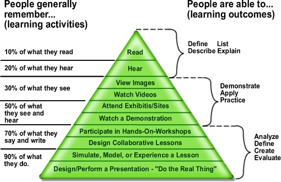
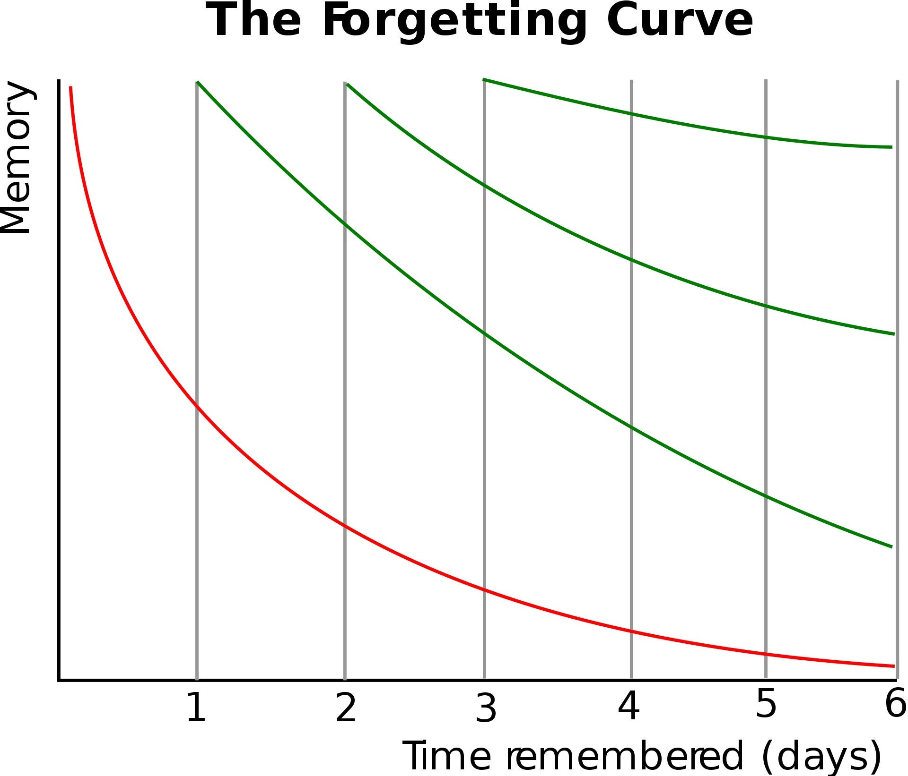

- 00 开篇词 这样入门Go，才能少走弯路.md.html
- 01 前世今生：你不得不了解的Go的历史和现状.md.html
- 02 拒绝“Hello and Bye”：Go语言的设计哲学是怎么一回事？.md.html
- 03 配好环境：选择一种最适合你的Go安装方法.md.html
- 04 初窥门径：一个Go程序的结构是怎样的？.md.html
- 05 标准先行：Go项目的布局标准是什么？.md.html
- 06 构建模式：Go是怎么解决包依赖管理问题的？.md.html
- 07 构建模式：Go Module的6类常规操作.md.html
- 08 入口函数与包初始化：搞清Go程序的执行次序.md.html
- 09 即学即练：构建一个Web服务就是这么简单.md.html
- 10 变量声明：静态语言有别于动态语言的重要特征.md.html
- 11 代码块与作用域：如何保证变量不会被遮蔽？.md.html
- 12 基本数据类型：Go原生支持的数值类型有哪些？.md.html
- 13 基本数据类型：为什么Go要原生支持字符串类型？.md.html
- 14 常量：Go在“常量”设计上的创新有哪些？.md.html
- 15 同构复合类型：从定长数组到变长切片.md.html
- 16 复合数据类型：原生map类型的实现机制是怎样的？.md.html
- 17 复合数据类型：用结构体建立对真实世界的抽象.md.html
- 18 控制结构：if的“快乐路径”原则.md.html
- 19 控制结构：Go的for循环，仅此一种.md.html
- 20 控制结构：Go中的switch语句有哪些变化？.md.html
- 21 函数：请叫我“一等公民”.md.html
- 22 函数：怎么结合多返回值进行错误处理？.md.html
- 23 函数：怎么让函数更简洁健壮？.md.html
- 24 方法：理解“方法”的本质.md.html
- 25 方法：方法集合与如何选择receiver类型？.md.html
- 26 方法：如何用类型嵌入模拟实现“继承”？.md.html
- 27 即学即练：跟踪函数调用链，理解代码更直观.md.html
- 28 接口：接口即契约.md.html
- 29 接口：为什么nil接口不等于nil？.md.html
- 30 接口：Go中最强大的魔法.md.html
- 31 并发：Go的并发方案实现方案是怎样的？.md.html
- 32 并发：聊聊Goroutine调度器的原理.md.html
- 33 并发：小channel中蕴含大智慧.md.html
- 34 并发：如何使用共享变量？.md.html
- 35 即学即练：如何实现一个轻量级线程池？.md.html
- 36 打稳根基：怎么实现一个TCP服务器？（上）.md.html
- 37 代码操练：怎么实现一个TCP服务器？（中）.md.html
- 38 成果优化：怎么实现一个TCP服务器？（下）.md.html
- 39 驯服泛型：了解类型参数.md.html
- 40 驯服泛型：定义泛型约束.md.html
- 41 驯服泛型：明确使用时机.md.html
- 元旦快乐 这是一份暂时停更的声明.md.html
- 加餐 作为Go Module的作者，你应该知道的几件事.md.html
- 加餐 如何拉取私有的Go Module？.md.html
- 加餐 我“私藏”的那些优质且权威的Go语言学习资料.md.html
- 加餐 聊聊Go 1.17版本的那些新特性.md.html
- 加餐 聊聊Go语言的指针.md.html
- 加餐 聊聊最近大热的Go泛型.md.html
- 大咖助阵 叶剑峰：Go语言中常用的那些代码优化点.md.html
- 大咖助阵 大明：Go泛型，泛了，但没有完全泛.md.html
- 大咖助阵 孔令飞：从小白到“老鸟”，我的Go语言进阶之路.md.html
- 大咖助阵 徐祥曦：从销售到分布式存储工程师，我与 Go 的故事.md.html
- 大咖助阵 曹春晖：聊聊 Go 语言的 GC 实现.md.html
- 大咖助阵 海纳：聊聊语言中的类型系统与泛型.md.html
- 期中测试 一起检验下你的学习成果吧.md.html
- 用户故事 罗杰：我的Go语言学习之路.md.html
- 结束语 和你一起迎接Go的黄金十年.md.html
- 结课测试 快来检验下你的学习成果吧！.md.html
- 捐赠
用户故事 罗杰：我的Go语言学习之路
你好，我是罗杰，目前在一家游戏公司担任后端开发主程。今天，我想跟你分享一下我学习Go的一些经历，如果你还是一个Go新人，希望我的这些经历，能给你带来一些启发和帮助。
说起来，我接触Go语言已经很久了，但前面好多次都没真正学起来。
我第一次接触 Go 语言是在 2010 年，当时我还在读大二，一个学长建议我了解一下 Go 语言，毕竟是谷歌出的一门语言，可能未来比较有发展前景。所以我当时下载并安装了Go的开发环境，还写了个 “hello world”，但是由于没有中文的教程，也没有人一起学习，学习 Go 语言这件事情很快就被我抛在脑后了。
我第二次接触Go是在 2015 年。当时我跟在豆瓣工作的发小聊天，我说最近想学 Python，他却坚定地告诉我学 Go。因为他们团队无法忍受 Python 总是半夜异常导致全站挂掉，正在往 Go 迁移。但我当时并没有给予足够的重视，没有学半个月又去玩了。
第三次接触Go语言是在 2017 年。我当时的技术栈只有 C++，对于 Web 服务这块，几乎没有任何经验，而且我们组的其他成员也没有相关经验。我就在想，总不能 Web 服务这一块总是向其他项目组“借”个 PHP 的同学过来协助吧？
于是，我开始再次尝试学习使用 Go 语言，并且因为一篇《Go语言TCP Socket编程》的博客认识了 Tony Bai 老师。当时我考虑把原本用 C++ 写的游戏服务改成用 Go 来实现，但当时能用中文搜索到的与 TCP 网络编程的文档非常有限，而Tony Bai 老师的文章写得非常详细，使我对 Go 是如何做这一部分有了基本的了解。
这一年，我开始尝试使用 Go 语言写一些小的 demo，例如操作数据库，以及Redis 和 Protobuf 相关等在 C++ 中要必须使用到的组件。
2018 年，在 Go 的实践上，我迈出了更大一步。我开始在新的项目上尝试使用 Go 语言完成了一些简单的功能，例如游戏版本控制，后台管理服务。但因为我从来没有深入学习过 Go 语言，在完成这些功能时，踩过好多坑。 比如，我当时开发管理后台，在谷歌上搜索要不要使用框架，就被某个知乎的言论坑得很惨。大意是 Go 已经非常简单了，没有必要使用框架。结果，我用 http 库辛苦搞了一阵后，才发现几乎没有人这么干，都是基于 gin 开发。这个时候，我意识到我必须要认真学习下Go语言了。
好在，当时的相关学习资料已经比较丰富了，我在慕课网学习了一遍 ccmouse 老师的视频课，算是正式入门了 Go 语言。期间，我因为 Web 后台需要，在多看阅读上购买了《Go Web编程》，不过到现在我都没有认真把这本书读完，基本上是把它当工具书，遇到问题，查查看里面有什么解决方案。
2019 年，我的项目上线了，前面我用 Go 写的两个服务的重要性就体现出来了，版本控制负责了游戏登录前的工作以及所有的平台方充值，管理后台则是运营人员最主要的使用工具。要知道 Web 这一块，我之前想都不敢想，但是现在我竟然做出来了，上线之后，稳定性也超出预期。接下来基本上一整年的时间，我都在不停地重构与维护这两个服务，期间还由于涉及前端页面的东西，在 B 站学了不少 HTML/CSS，JavaScript 的课程来配合业务方完成相应的功能。
但通过一年时间的修修补补，我意识到，我基本上还不能算入门 Go 语言，因为稍微高级一点的功能我都不会，也几乎没有深入到源码中去研究这些功能是如何实现的。
2020 年以疫情开始，在被 Go 语言折磨了近一年之后，我终于下定决心要深入 Go 语言了。当时我因为《深度解密Go语言之slice》这一篇文章认识了饶大，也关注了一些“Go 夜读”的成员，以及 draveness，这些大佬们对我触动非常大。
看了这么多优秀博主的博客之后，我之前的恐惧都没有了，因为他们把底层的源码都翻了出来，努力解除我们的困惑，也让我更有信心在工作中使用 Go 语言。
不过，虽然有优秀的博客，但是我们学习一定不能只依靠零散的博客，而要成体系地学习。后来，我在慕课网上学习了 Tony Bai 老师的 《改善Go语言编程质量的50个有效实践》 。年底的时候，无意中又阅读了COLLSHELL 《Go 编程模式》的系列博客，感觉对 Go 的理解又上了一个层次，作为回报，我在极客时间订阅了作者的专栏《左耳听风》。
通过近一年的 Go 的学习与积累，我应该可以算是熟练使用 Go 语言了，我开始尝试阅读一些源码，并且使用了 go-micro 作为框架层完成新游戏的开发。而且，使用 Go 开发的效率显然比 C++ 要高出不少，因为我们后端就只有两个人。
2021 年，学习的脚步依旧不能停止。这一年里，我最大的收获就是如何正确地学习。如今信息真是满天飞，各种各样的 APP 都想把各种内容塞给我们。而我们的大脑逐渐进入到了“看一遍就当记住了，收藏了就是掌握了”的状态当中。
我经常看了一个小时的手机，回头一想，刚才看了个什么，好像啥也没记住。这就是因为学习的方法错了，我发现学东西真的不能看一遍就了事。《论语》第一句就是：“学而时习之，不亦说乎”，为政篇更是提到“温故而知新，可以为师矣”。
除了勤奋之外，我们还应该明白学习要抓住核心、抓住本质。什么叫“书读千遍，其义自见”？就是说学习一定不是学得越多越好，而应该抓住本质。我最近很喜欢一部电影，叫《银河补习班》，电影里的爸爸把除课本以外的书籍都扔掉，发现所有课本才十一厘米。
关于更具体的学习方法，我推荐陈天老师的《如何学习一门技术？》，你可以学习一下，里面分享了非常多的干货，而且生动有趣。毕竟，在了解了大神是如何学习之后，我们才有可能成为一个大神。陈天老师在极客时间也有专栏《陈天 · Rust 编程第一课》，如果你有兴趣也可以了解一下。
从今年八月份起，我每周在极客时间App 上学习的时间都超过了十个小时，算是非常活跃的用户了。
当我在推广页看到Tony Bai 老师的课的那一瞬间，我就购买了。因为从老师的博客和之前的专栏上，我确实学到很多在其它地方学习不到的内容。我相信你在学这个专栏的时候应该也有体会，老师会不停地强调 Go 语言的设计哲学，更会直达Go语言的本质。
虽然我用 Go 语言做开发的时间已经超过三年了，但依然从这个专栏上学到许多非常实用的技巧，弥补了之前遗漏的很多知识点。我在其中一讲留言说：老师在我心目中就是 “Go 语言百科全书”，这句话真的是我对老师发自内心的敬佩 。
洋洋洒洒写了这么多，我觉得我在学习、提高的时候走了很多弯路，从一开始的学习方法就是错误的：
- 首先是没有主动性。如果 2010 年我就能坚持去阅读英文的文档，深入去学习 Go 语言，可能现在我也能跟这些大佬一样，写出优秀的博客来帮助其他人；
- 其次是懒得学习。2013 年，我是在 COLLSHELL 中学习Vim，但是我没有再关注过博主的其它文章，其实当时博主很多关注 C++ 的文章，写得也非常优秀。如果我能更主动一些，就能发现更多的“宝藏”；
- 最后是方法错误。除了 Go 之外，我还学过 Python 三次，而且每次都完整地看完了一本书，或者学习了完整的视频，但是至今我也无法很快写出 Python 代码，因为我从来都没有实践过。
所以，我想跟你说的是，如果你想让自己的学习更有收获、少走弯路，我建议你多注意一下学习方法。你可以了解一下两个重要理论。首先是学习金字塔和费曼学习法，从这里我们可以知道，通过听讲与阅读知识的留存率最多只有 10%。第二个是艾宾浩斯遗忘曲线，从这里我们还可以知道如果不复习，第二天我们学到的知识只剩下了 5%。久而久之，我们就会对学习失去了兴趣。


那我们可以怎么结合这两个理论，提升自己的学习效率/能力呢？
我跟你分享下我现在学习专栏课的方法吧：
- 第一天仔细阅读一遍（如果有不理解的，我可能会多读几遍）；
- 第二天复习一遍，如果本周内时间充足，一定要做笔记；
- 如果有实战的内容，抽出时间写代码（如果没有时间，加到待办任务中，等有时间一定要做一遍）；
- 如果时间允许，最好有一个月内再复习一次，这样才能有效地抵御遗忘曲线。
除此之外，我还会将学到的知识按照我的理解给同事讲解，一定要用心讲解，因为只有教会别人，才可能是自己真正掌握的时候。同时，我也会在工作中践行学习到的内容，比如最近我也在学习《设计模式之美》专栏，发现只有把学到的思想应用在平时代码中，你的学习才会有明显的效果。要是你没有能讲解的对象，也无法立刻在工作中使用，我想写博客应该也是个不错的选择，总之有输入必须要有输出。
最后我想说的是，学习真的要认真对待，我建议你养成做笔记的好习惯。不管是看专栏、读书，还是阅读微信公众号，看 B站的视频，我们都可以将学到的东西记录下来，时常回顾。让学到的知识不轻易流失，让要学习的内容越来越少，我们才会觉得越来越轻松。
希望所有人都能学会正确的学习方法，坚持终身学习的理念，让自己变得越来越好。
© 2019 - 2023 Liangliang Lee. Powered by gin and hexo-theme-book.